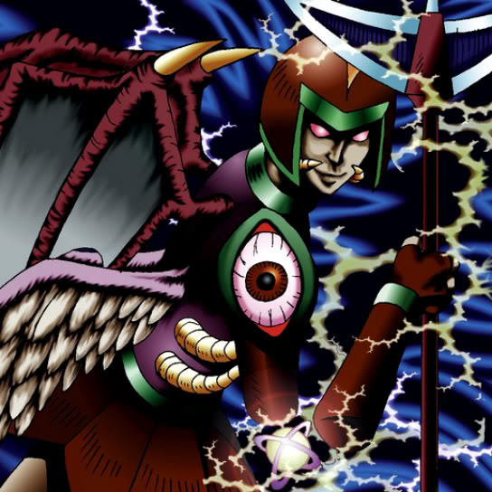

Doma The Angel of Silence

STATS
ATK: 1600
DEF: 1400
DECK COST
Deck Cost per Card: 30
Fusion List (2 Possible Fusions)
Doma The Angel of Silence + Goddess with the Third Eye = Dark Witch
Doma The Angel of Silence + Spirit of the Harp = Dark Witch